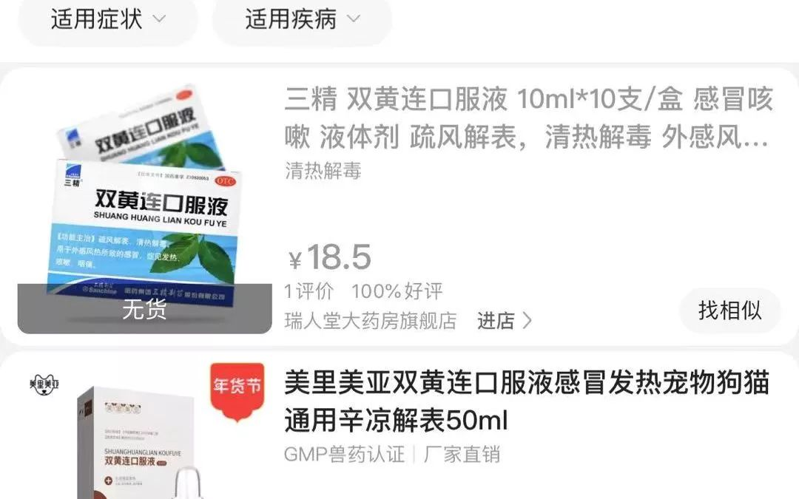
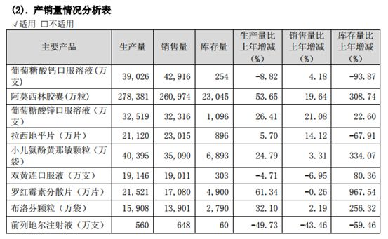

肺炎日记丨1月26日：研究揭开肺炎扩散冰山一角
原文链接 备份链接 【财新网】（记者 黄蕙昭）从全国看，疫情还处于早期散发阶段。国家卫健委主任马晓伟在1月26日下午国务院新闻办举行的发布会上表示。截至1月26日20时，中国确诊新型冠状病毒肺炎病例2058例，其中湖北1052例，而非湖 …

最近3天左右，哈中药四厂就接到了一些公司的双黄连口服液订单，“它是传统组方，针对清热解毒，其中的金银花也有抗炎的作用”。对于抑制新型冠状病毒的效用，黄玉珠认为“具体还需要实验的数据”。
全文3762字，阅读约需7.5分钟
“十来箱（双黄连口服液）半个小时就没了！”
2月1日，河南某市三甲医院药房工作人员苏兰（化名）告诉新京报记者，因双黄连紧缺，医院已经只针对发热门诊开双黄连口服液。
与此同时，远在东莞市的一家双黄连口服液生产厂商，已经接到东莞市政府加大生产双黄连口服液的通知，“今日开始复工生产”。
双黄连口服液一夜之间变得紧俏，与1月31日晚间中科院上海药物所与武汉病毒所联合发布的一项研究有关：“研究初步发现，中成药双黄连口服液可抑制新型冠状病毒。”随后，各大电商平台的双黄连口服液等产品被一抢而空。
湖北省人民政府网凌晨转发的消息称，现代医学研究认为，双黄连口服液具有广谱抗病毒、抑菌、提高机体免疫功能的作用，是目前有效的广谱抗病毒药物之一。“目前，双黄连口服液已在上海公共卫生临床中心、华中科技大学附属同济医院开展临床研究。”
不过，双黄连口服液真的能抑制新型冠状病毒吗？有专家及医学人士提出了质疑：没有足够的公开数据能证明它在人体中“可抑制新型冠状病毒”。

━━━━━
双黄连口服液“抑制冠状病毒”？有医院限量开药
2月1日一大早，在河南某市三甲医院药房工作的苏兰（化名）接到库房主任电话，要留一箱双黄连口服液，随后又收到晚班值班同事的消息，“赶紧报双黄连计划，排队买”。
值班的同事告诉苏兰，有患者昨晚来买双黄连，但已经没有货，让对方早上再来买。“十来箱半个小时就没了”，苏兰对记者说道。
双黄连一售而空，苏兰赶紧联系医院采购，“医药公司说凌晨两点就有人来要货了，现在只能开始分配，各个医院都分配一点，不能说谁先抢就是谁的”，“最后药学部通知只能发热门诊开药（双黄连口服液），最多7天的量”。
苏兰建议市民，不要随意来医院排队购买双黄连口服液，“医院出现疑似病例，来医院并不安全”。
1月31日晚，中国科学院上海药物所与武汉病毒所联合发布，“研究初步发现，中成药双黄连口服液可抑制新型冠状病毒。”随后，新京报记者查看淘宝、京东、苏宁等电商平台发现，大部分商品显示无货或下架。
但是，双黄连口服液真的能抑制新型冠状病毒吗？一些医学专家对此提出了不同的看法。
2月1日丁香医生发文称，想要想要证明一种药物真实有效需要进行动物实验、一期临床试验、二期临床试验、三期临床试验。而上海药物所与武汉病毒所的表态为“目前，双黄连口服液已在上海公共卫生临床中心、华中科技大学附属同济医院开展临床研究。”才开始做临床试验，没有足够的公开数据能证明它在人体中“可抑制新型冠状病毒”。
人民日报2月1日早间也发布微博提示，“抑制并不等于预防和治疗”。按照世界卫生组织的说法，“到目前为止，还没有用于预防和治疗新型冠状病毒的药物”。
▲上海市民深夜抢购双黄连口服液 药店工作人员连呼“卖完了”。新京报我们视频出品（ID：wevideo）
━━━━━
需求狂热之下，有工厂应政府要求扩大生产
在“中成药双黄连口服液可抑制新型冠状病毒”的消息发布后，各大双黄连口服液的制药厂状况如何？
“订单非常多”，“很多公司都是有多少要多少”，哈中药四厂的总工程师黄玉珠2月1日对新京报记者表示。
黄玉珠称，哈中药四厂在初二就开始提前生产双黄连口服液，目前工厂的年产能达到7000万至8000万支，该口服液的生产周期比较长，“从原料提取到出厂可能要半个月”。
最近3天左右，哈中药四厂就接到了一些公司的双黄连口服液订单，“它是传统组方，针对清热解毒，其中的金银花也有抗炎的作用”。对于抑制新型冠状病毒的效用，黄玉珠认为“具体还需要实验的数据”，“在目前疫情情况下，起码对清热和抗炎是有作用的”。
“目前政府可能还会集中采购，哈尔滨新区政府和省药监最近也一直关注我们的产能，他们要了解一下情况，对后续整体药品调配可能会有一个考虑”，黄玉珠说道。
▲中药企业回应双黄连抑制新冠病毒：大年初二就开始加班生产。新京报我们视频出品（ID：wevideo）
2月1日，新京报记者致电富森药业，市场部工作人员回应称，公司原本就已经在加大生产，“我们已经跟政府沟通好了，至于是如何沟通的我不太清楚”。另一位工作人员对记者表示，公司大概是从初二初三的时候就开始加班加点生产，在全负荷状况下，前两年的双黄连口服液的年产能就达到了10亿支。
2月1日，新京报记者联系到黑龙江瑞格制药有限公司，该公司工作人员对记者表示，目前疫情较为严重，公司唯一能做的就是正常生产，也没有出现加班加点生产的情况，“我们现在有些市场已经断货了，着急发货，但是产量是有限的，不是想扩大就扩大，而且没有经过相关的批准也不能随便私自增加产量”，“如果全年生产，双黄连口服液的产能在1亿—1.5亿支”，
与上述两家企业不同的是，位于广东的东莞市亚洲制药有限公司工作人员告诉记者，公司最高年产双黄连口服液在5亿支左右，主要销往广东本地，目前已经接到了东莞市政府加大生产双黄连口服液的通知。“今天开始正常生产，昨天上海药物所的消息发布后，（东莞市）政府才开始对我们有要求”上述工作人员表示。
━━━━━
“双黄连”相关药品批号85个,其中13个产品为口服液
新京报记者在国家药监局官网上检索看到，与“双黄连”相关批号有85个产品，其中13个产品为双黄连口服液，其余的还有双黄连片、双黄连栓、双黄连胶囊、双黄连颗粒，双黄连糖浆、双黄连滴丸、双黄连含片、双黄连注射液、双黄连泡腾片等产品。
新京报记者在国家药监局国产药品中检索发现，目前国内有双黄连口服液生产批准的企业共有12家企业共13个生产批号，分别为黑龙江瑞格制药有限公司、河南太龙药业股份有限公司（国药准字Z41020565及国药准字Z20133010)、黑龙江省林宝药业有限责任公司、东莞市亚洲制药有限公司、哈药集团三精制药有限公司、南阳市新生制药有限公司、黑龙江金九药业股份有限公司、河南福森药业有限公司、河南天地药业股份有限公司、哈尔滨中药四厂有限公司、黑龙江珍宝岛药业股份有限公司、黑龙江喜人药业集团有限公司。
上述公司中，河南太龙药业股份有限公司、黑龙江珍宝岛药业股份有限公司均为A股上市公司，哈药集团三精制药有限公司为上市公司哈药股份的全资子公司，河南天地药业为上市公司天士力控股子公司；河南福森药业有限公司为港股上市公司。
在太龙药业的介绍中，双黄连口服液的主治功能为“疏风解表，清热解毒。用于外感风热所致的感冒，症见发热、咳嗽、咽痛。”
2018年度，太龙药业生产的双黄连口服液为7622万支，双黄连口服液（浓缩型）为4252.24万支，双黄连口服液（儿童型）为5186万支。
根据哈药股份2018年年报，在2018年哈药股份生产的双黄连口服液为19146万支。

▲哈药股份2018年年报截图
在哈药集团官网还显示，1月23日，哈药集团与九州通合作通过黑龙江省十字会向湖北省红十字会捐赠价值1000万元的药品，其中包括三精牌双黄连口服液、世一堂牌复方金银花颗粒等。
另一家河南福森药业有限公司1月31日午间在官网发布消息称，公司春节假期紧急调配员工，调动企业内部一切资源，积极组织生产，所有生产线满负荷工作，加班加点保障产品质量和生产供应，尽可能满足市场需求。同时，优先把货物保障供应到疫情地区。
新京报记者 李云琦 编辑 赵泽 校对 何燕
━━━━━
*“双黄连抗新型肺炎”未经人体试验，专家：慎用*
双黄连口服液等中药真的可预防新冠病毒感染吗？对此，北京世纪坛医院副主任药师金锐表示，双黄连口服液由金银花、黄芩、连翘三味中药组成，这三味中药具有良好的清热解毒、表里双清的作用。
现代医学研究认为，双黄连口服液具有广谱抗病毒、抑菌、提高机体免疫功能的作用，是目前有效的广谱抗病毒药物之一。“双黄连口服液可抑制新型冠状病毒”是通过现代医学病毒抑制角度进行的体外研究，并非按照传统中医辨证理论得出的临床应用结论。“单从双黄连口服液本身来讲，它可以认为是清热解毒的苦寒药，曾有中医院士到武汉参与治疗后提出，应慎用苦寒药。”金瑞指出，双黄连口服液作为中成药，应在中医理论指导下进行研究，不建议正常人通过服用双黄连口服液来预防新冠病毒。
一位不愿透露姓名的三甲医院药师称，双黄连口服液本身具有广谱抗病毒作用，但对抑制新冠病毒是否有效研究尚少，且无人体试验，很多药物体外有效但进入人体后未必有效。
金锐表示，在此前国家卫健委发布的第四版新冠病毒诊疗方案的中医治疗方案中，推荐的金花清感颗粒就包含双黄连的组方，连花清瘟颗粒成分中也含有金银花和连翘。“实际上，如果在医学观察阶段出现乏力伴随发热，使用上述中成药即可，相当于双黄连的加强版。”金锐提醒，苦寒药容易导致腹泻、腹痛等副作用，脾胃虚寒的人、老人、小孩或近阶段食欲不佳，有腹泻症状的人群都不建议盲目服用。
▲兽用双黄连被疯抢 店家：有的顾客不听劝 认为兽用人用没区别。新京报我们视频出品（ID：wevideo）
新京报记者 张兆慧 编辑 岳清秀 校对 卢茜
相关阅读：
双黄连能“抑毒”？医学人士：抢到也不能盲目吃**[](http://mp.weixin.qq.com/s?__biz=MzU2MzA2ODk3Nw==&mid=2247546018&idx=5&sn=49fd349ccc2e8bc88f007253908210fc&chksm=fc5d9dfccb2a14ea9c941e0e9dbbac94db4a89c70fdda40124da1f90bcb8f5113112c58ba2bd&scene=21#wechat_redirect)
**
点击下图进入”全国新型冠状病毒感染肺炎实时地图“

*值班编辑 花木南*


本文未经新京报书面授权不得转载使用
欢迎朋友圈分享

原文链接 备份链接 【财新网】（记者 黄蕙昭）从全国看，疫情还处于早期散发阶段。国家卫健委主任马晓伟在1月26日下午国务院新闻办举行的发布会上表示。截至1月26日20时，中国确诊新型冠状病毒肺炎病例2058例，其中湖北1052例，而非湖 …
原文链接 备份链接 随着疫情消息的增多，各种关于其来源、如何传播与防控的“传言”也接踵而来。为此，我们采访了相关领域的专业人士，试图解答十个公众最为关心的问题。 记者 | 许冰清 肖文杰 倪妮 张云亭 项维肖 毛怡玫 实习记者 | 文思 …
原文链接 备份链接 随着疫情消息的增多，各种关于其来源、如何传播与防控的“传言”也接踵而来。为此，我们采访了相关领域的专业人士，试图解答十个公众最为关心的问题。 记者 | 许冰清 肖文杰 倪妮 张云亭 项维肖 毛怡玫 实习记者 | 文思 …
原文链接 备份链接 口述 | 许平 记者 | 王珊 从2019年12月31日到现在，我所在医院的病人越来越多了，以发热门诊为例，目前每天病人的体量已经是医院平常病人数的10多倍，我们医院还在距离市中心比较偏的医院。冬季本身就是流感高发季， …
原文链接 备份链接 “从严格意义上说，病毒不能算是活着。病毒非生非死，存在于生命与非生命的边界之上。若是处于细胞外，病毒只是存在而已，什么也不会发生。一旦病毒进入细胞，就变成了‘特洛伊木马’。病毒在繁殖时看起来是活着的，但从另外一个角度 …